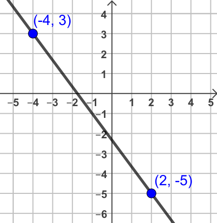
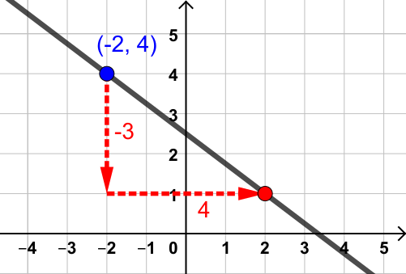

5.2 Understanding Slope
Introduction
If you've ever been walking, hiking or biking in a hilly area then you know that not all trails are flat! Trails have various inclines; some extremely steep and others relatively level.
Lines are the same; they can rise rapidly or drop gradually or anything in between. That change in elevation is measured and understood using the concept of slope.
The Concept of Slope
In the case of our trail, how could you describe its steepness? One way would be to measure how much the trail rises or falls over a fixed distance, like \(100\) meters. If you found that one section rises \(15\) meters for every \(100\) meters you move forward then you'd know it is steeper than a section that only rises \(5\) meters over the same distance. This would allow you to compare the steepness of different trail segments.
Slope is a measure of how rapidly lines change and it works exactly the same way. We even use similar words. Slope is often described as "rise-over-run", where "rise" means the vertical change and "run" is the horizontal change.
In our trail example, "rise" is the vertical change in elevation while the "run" is the horizontal distance covered. If we divide the rise by the run (which is what "rise-over-run" literally means) then we get a ratio indicating the vertical change for every unit change horizontally.
Because of this, slope is often referred to as a "rate of change" or a "per unit change". Things like miles per gallon, servings per package, dollars per hour, or feet per second are examples of rates of change.
Calculating Slope
Usually, we use the letter \(m\) to represent slope and, if we know the rise and run, then \(m=\frac{\text{rise}}{\text{run}}\).
For instance, if a trail rises \(20\) meters for every \(100\) meters you move forward, the slope would be
\begin{align} m &= \frac{\text{rise}}{\text{run}} \\ &= \frac{20}{100} \\ &= \frac{1}{5} \end{align}If the rise and run are not provided, which is generally the case, we will have to find them. The best way to do this is to identify the coordinates of two points \((x_1,y_1)\) and \((x_2,y_2)\) on the line. Since rise is a vertical change, it could be found by subtracting the \(y\)-coordinates. Run could be calculated in a similar way by subtracting the two \(x\)-coordinates.
If \((x_1,y_1)\) and \((x_2,y_2)\) are two points a line, then the slope of that line is
\begin{align} m = \frac{ \text{rise} } { \text{run} } = \frac{y_2-y_1}{x_2-x_1} \end{align}Let's walk through an examaple that can be done both ways.
Find the slope of the line that passes through the points \((2, 1)\) and \((5, 6)\).
Solution

From the graph it's clear that the rise is \(5\) and the run is \(3\), giving us a slope of
\begin{align} m &= \frac{ \text{rise} } { \text{run} } \\ &= \frac{5}{3} \end{align}Now let's use the slope formula.
\begin{align} m &= \frac{y_2-y_1}{x_2-x_1} \\ &= \frac{6-1}{5-2} \\ &= \frac{5}{3} \end{align}The slope between these two points is \(m = \frac{5}{3}\). This means that for every \(3\) units of horizontal change, there is a corresponding \(5\) units of vertical change.
In this example we used \((2, 1)\) as the first point \((x_1,y_1)\) and \((5, 6)\) as the second point \((x_2,y_2)\). In practice, it makes no difference which point you label as the first one. What is vital, however, is that once the points are labeled, the coordinates go into their proper places in the formula.
Find the slope of the line that passes through the points \((-4, 3)\) and \((2, -5)\)
Solution
 \begin{align} m &= \frac{{y_2 - y_1}}{{x_2 - x_1}} \\ &= \frac{{-5 - 3}}{{2 - (-4)}} \\ &= \frac{-8}{6} \\ &= \frac{-4}{3} \end{align}
The slope between these two points is \(m = \frac{-4}{3}\). This means that for every \(3\) units of horizontal change, there is a corresponding drop of \(-4\) units in the vertical direction.
Comparing the graphs from these last two examples will give us an extra insight into slope and the behavior of lines.
A positive slope (like in Example 1) corresponds to an upward slant from left to right - just like a trail that climbs upward as you hike forward. A negative slope (like Example 2) indicates that the line has a downward slant, similar to a trail that descends as you move ahead.
Zero Slope and Undefined Slope
Since the slope formula has subtraction, there's a chance we might end up with \(0\) in either the numerator or the denominator.
If \(y_1=y_2\) then the slope is zero (\(m = 0\)), which means the line is horizontal.
If \(x_1=x_2\) then the slope is undefined (since division by \(0\) is undefined), which means the line is vertical.
Let's explore a few more examples where this comes into play.
Find the slope of the line through the points \((-2, 4)\) and \((3, 4)\)
Solution
\begin{align} m &= \frac{y_2 - y_1}{x_2 - x_1} \\ &= \frac{4 - 4}{3 - (-2)} \\ &= \frac{0}{5} \\ &= 0 \end{align}
In this case, since the slope was \(0\), the line is horizontal. This could have been seen by noticing the two \(y\)-coordinates were both \(4\).
Find the slope the line through \((-1, 2)\) and \((-1, -3)\)
Solution
\begin{align} m &= \frac{y_2 - y_1}{x_2 - x_1} \\ &= \frac{-3-2}{-1-(-1)} \\ &= \frac{-5}{0} \\ &= \text{undefined} \end{align}
Since division by \(0\) is undefined, the slope is undefined. This means the line is vertical, which we could have seen by noticing the two \(x\)-coordinates were the same.
Using Slope to Graph Lines
Now that we know the variety of values slope can have, we can begin to use it to graph lines.
If you know the slope of a line and the coordinates of one point, then other points can be found by adding the rise to the \(y\)-coordinate and the run to the \(x\) coordinate.
Use slope to graph the line through \((2,1)\) with a slope of \(m=\frac{4}{5}\).
Solution

To graph the line, start at the point (2,1) and move up 4 spaces and right 5 spaces to make another point. Then draw the line through those points. Extra points can be added using that same up 4, right 5 pattern if desired.
Use slope to graph the line through \((-2,4)\) with a slope of \(m=\frac{-3}{4}\).
Solution

For this line we start at \((-2,4)\) and then move down \(3\) spaces and right \(4\) to create second point, and then draw the line.
Use slope to graph the line through \((1,4)\) with a slope of \(m=0\).
Solution

Since the slope is \(m=0\), we know this line is horizontal. To graph it we start at \((1,4)\) and pick any other point that also has a \(y\)-coordinate of \(4\). All the points on a horizontal line always have the same \(y\)-coordinate.
Use slope to graph the line through \((3,2)\) with undefined slope.
Solution

Since the slope is undefined, this line is vertical. To graph it we start at \((3,2)\) and pick any other point with an \(x\)-coordinate of \(3\). All the points on a vertical line always have the same \(x\)-coordinate.
Practical Application of Slope
Slope isn't just a mathematical concept; it has real-world applications. From architecture and urban planning (such as determining the slope of wheelchair ramps) to calculating rates (like steps per minute or dollars per hour), slope gets used in many places.
In real world scenarios the information may not be given as points, so we might have to extract the coordinates from the description before we can compute the slope.

Suppose a scuba diver breathes air at a constant rate. After \(15\) minutes of diving they have \(2225\)psi of air. After \(30\) minutes their gauge shows \(1400\)psi. Find and interpret the slope in this scenario.
Solution
If we use time as the \(x\)-coordinates and psi of air as the \(y\)-coordinates, then our two points are \((15,2225)\) and \((30,1400\)).
\begin{align} m &= \frac{y_2 - y_1}{x_2 - x_1} \\ &= \frac{1400-2225}{30-15} \\ &= \frac{-825}{15} \\ &= -55 \end{align}Viewing this as a rate, it would mean that for every minute of diving the amount of air in the diver's tank decreases by \(55\) psi.
Since scuba divers need to save enough air to slowly ascend (to avoid decompression), monitoring the rate at which they consume air is vital. Most divers use color coded pressure gauges so they don't have to do algebra when diving.

In baseball, the batter at home plate is \(60.5\) feet away from the pitcher's mound. Suppose on a particular pitch the ball travels that distance from the mound to home plate in \(0.5\) seconds. Find and interpret the slope in this scenario.
Solution
If we use time as the \(x\)-coordinates and distance in feet from home plate as the \(y\)-coordinates, then our two points are \((0,0)\) and \((0.5,60.5\)).
\begin{align} m &= \frac{y_2 - y_1}{x_2 - x_1} \\ &= \frac{60.5-0}{0.5-0} \\ &= \frac{60.5}{0.5} \\ &= 121 \end{align}If we include the units this tell us the ball is traveling at a rate of \(121\) feet per second. In other words, for this example the slope is the speed of the pitch.
That sounds fast, but it's hard to compare with other things we might be familiar with that are measured in miles per hour. But if we know that \(1\ \text{mile}=5280\ \text{feet}\) and \(1\ \text{hour}=3600\ \text{seconds}\), we can convert the units.
\begin{align} \frac{121\ \text{feet}}{1\ \text{second}} & \times \frac{1\ \text{mile}}{5280\ \text{feet}} \times \frac{3600\ \text{seconds}}{1\ \text{hour}} && \qquad \hint{\text{Apply conversion factors}} \\ &= 121 \times \frac{1}{5280} \times \frac{3600}{1} \ \frac{\text{miles}}{\text{hour}} && \qquad \hint{\text{Simplify units}} \\ &= 82.5 \ \frac{\text{miles}}{\text{hour}} && \qquad \hint{\text{Multiply}} \\ \end{align}We now have the speed of the ball in miles per hour and can compare it more easily with the speed of a car or a person running.
Conclusion
Now that we have a clear understanding of what slope signifies and how to compute it, we need to spend more time seeing how it helps us graph lines by hand, and how it might be incorporated into linear equations.
That's the focus of the next section where we'll investigate the slope-intercept form of a line.